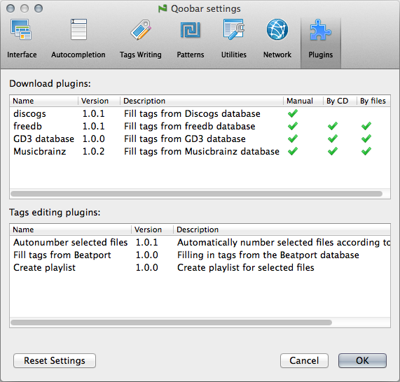

Plugins

Here you can view the installed plugins. They are divided into two groups:
- Download plugins - list of sources used in the Fill dialog.
The last three columns describe available modes the plugin can work in.
Manual means that the plugin can perform search by the artist name and the album title manually entered by a user.
By CD means that the plugin can read the table-of-contents (TOC) of a CD in the CD-ROM and search for this particular CD.
By files means that the plugin can use the list of selected files to imitate the CD TOC and search for an abstract album according to the lengths of these selected files. - Tags editing plugins - list of plugins under the Tools menu.
© 2009-2016 Alex Novichkov